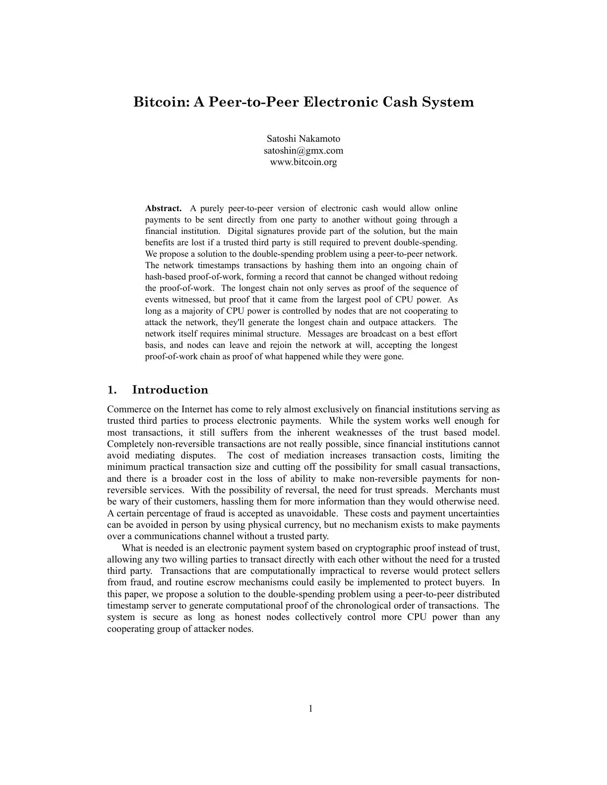

1984
Winston Smith quietly rebels against a totalitarian state that controls truth, language, and private thought.
Winston Smith quietly rebels against a totalitarian state that controls truth, language, and private thought.
A shepherd follows a dream of treasure across North Africa and learns to recognize purpose, courage, and opportunity.
Griffin presents a critical account of the Federal Reserve’s origins and argues that centralized banking concentrates financial power.
Snowden recounts his path from intelligence contractor to whistleblower and explains why he exposed government mass-surveillance programs.

The paper proposes peer-to-peer electronic cash secured by digital signatures, proof of work, and a distributed transaction history.

After wrongful imprisonment, Edmond Dantès escapes, reinvents himself, and pursues an elaborate reckoning against those who betrayed him.